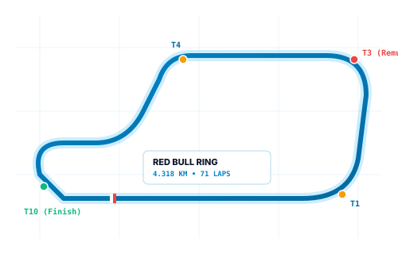
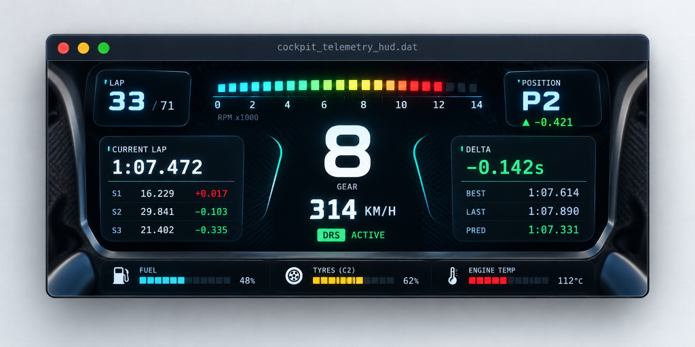
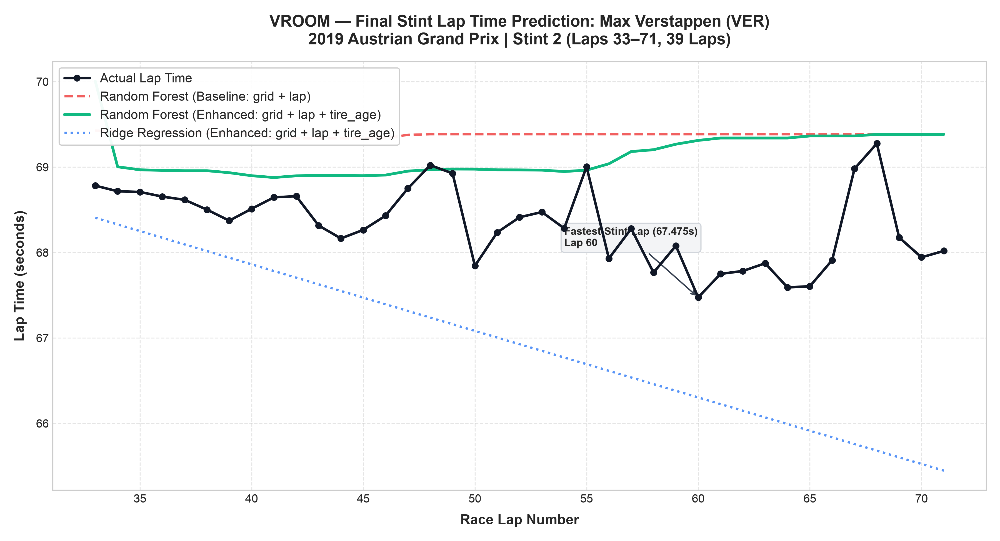

an f1 lap time predictor rooted in classical machine learning.

what makes
a lap fast?
Every lap time in Formula 1 is an ongoing negotiation between two opposing physical dynamics.

705 raw laps.
683 clean flies.
We do not train models on pit stops or synthetic records. Formula 1 lap-time modeling demands strictly verified flying pace.
never train
on random laps.
Random splitting causes temporal data leakage between adjacent laps. We enforce a strict chronological stint boundary.
max verstappen — final stint pace
Evaluating model predictions against recorded test telemetry across 39 clean flying laps (Laps 33 to 71) during Verstappen's race victory.

classical algorithms, verified
Evaluated strictly on 403 unseen test laps with zero temporal leakage.
Ridge Regression
Smooth linear plane capturing macro race lap pace progression.
Random Forest
Non-linear decision ensemble outperforming linear regression by ~1.24s RMSE.
tire_age did not improve out-of-stint extrapolation (Enhanced RF RMSE 0.8319s vs Baseline 0.8043s).
tire_age = race_lap - stint_start_lap. The baseline models on grid + lap already capture race progression; adding collinear tire age produced a slight test penalty.
ready to predict?
Explore custom lap time predictions or examine the full 10-driver classification cohort.
frequently asked questions
lap predictor
Interactive local browser inference engine evaluated against recorded historical telemetry from the 2019 Austrian Grand Prix.
race lab
2019 Austrian Grand Prix (Race ID 1018) Experimental Findings & Recorded Stint Data.
| Model Algorithm | Feature Space | Test RMSE (s) | Test MAE (s) | Train RMSE (s) | Train MAE (s) |
|---|
tire_age did not provide additional predictive benefit over grid position and lap number (Ridge RMSE: 2.0461s → 2.0686s; RF RMSE: 0.8043s → 0.8319s). Within a single final stint, tire age has near-perfect collinearity with lap number (), providing redundant information. The Random Forest baseline on grid and lap already captures macro race progression dynamics.
| Driver (Code) | Grid Slot | Classification | Total Laps | Pit In-Laps | Train Laps | Test Laps | Clean Laps |
|---|
technical methodology
Systematic pipeline design, boundary conventions, and classical modeling constraints.
data source & integrity
KAGGLE F1 (1950–2024)
Standardized timing records from lap_times.csv, pit_stops.csv, results.csv, and races.csv by Rohan Rao were utilized. Source files are strictly preserved without synthetic augmentation or modification.
race selection rationale
SPIELBERG // RACE ID 1018Selected for its unbroken green-flag running: the 2019 Austrian Grand Prix at the Red Bull Ring. All 20 selected-race drivers were classified in the official results; 5 completed the full 71-lap distance and 15 finished one lap behind.
sequential 3-rule cleaning cascade
705 RAW → 683 CLEAN
Non-flying laps are eliminated in strict sequential order:
• Rule 1: Pit-stop in-laps removed (11 laps).
• Rule 2: Immediate out-laps (P+1) removed (11 laps).
• Rule 3: Outlier laps > 1.5× driver median removed (0 laps).
Exactly 683 clean flying laps retained across all 10 classified finishers.
feature space engineering
BASELINE VS ENHANCED
• Baseline: grid (qualifying starting slot) + lap (macro race progression).
• Enhanced: grid + lap + tire_age.
• Tire Age Convention: Resets to 0 at the first retained flying lap of each stint (Lap 1 for Stint 1; Lap P+2 after pit stop), incrementing by 1 on each subsequent lap.
chronological stint partition
ZERO TEMPORAL LEAKAGE
Chronological stint partition testing true out-of-stint extrapolation:
• Training: Earlier stints across 10 drivers (280 laps, 41.0%).
• Testing: Final stint across all 10 drivers (403 laps, 59.0%).
Strict zero data leakage between training and testing partitions.
classical regression algorithms
NO NEURAL BLACK BOXES
• Ridge Regression: L2 regularized linear model inside a StandardScaler pipeline (α=1.0).
• Random Forest Regressor: Non-linear decision tree ensemble (100 estimators, max depth 6). Pinned to RANDOM_STATE = 42.
evaluation & benchmarks
RMSE & MAE IN SECONDS
Evaluated strictly on the unseen final stint test set:
• Random Forest Baseline: RMSE 0.8043s | MAE 0.6448s.
• Ridge Regression Baseline: RMSE 2.0461s | MAE 1.7534s.
Non-linear tree ensemble outperformed linear regression by ~1.24s RMSE.
collinearity & stint dynamics
SCIENTIFIC CONCLUSION
Adding tire_age slightly worsened test RMSE (+0.023s Ridge; +0.028s RF). Because the test set is strictly the final stint, tire age linearly tracks race lap progression (tire_age = lap - constant). The baseline models already capture macro pace progression through grid slot and lap number.